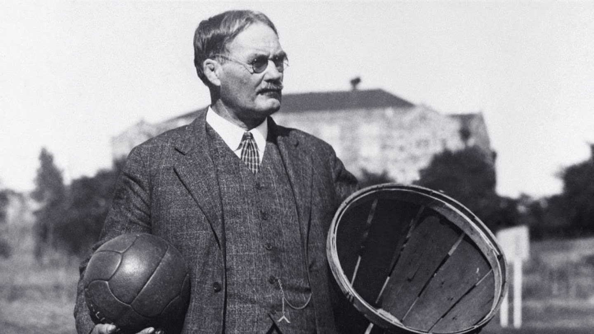
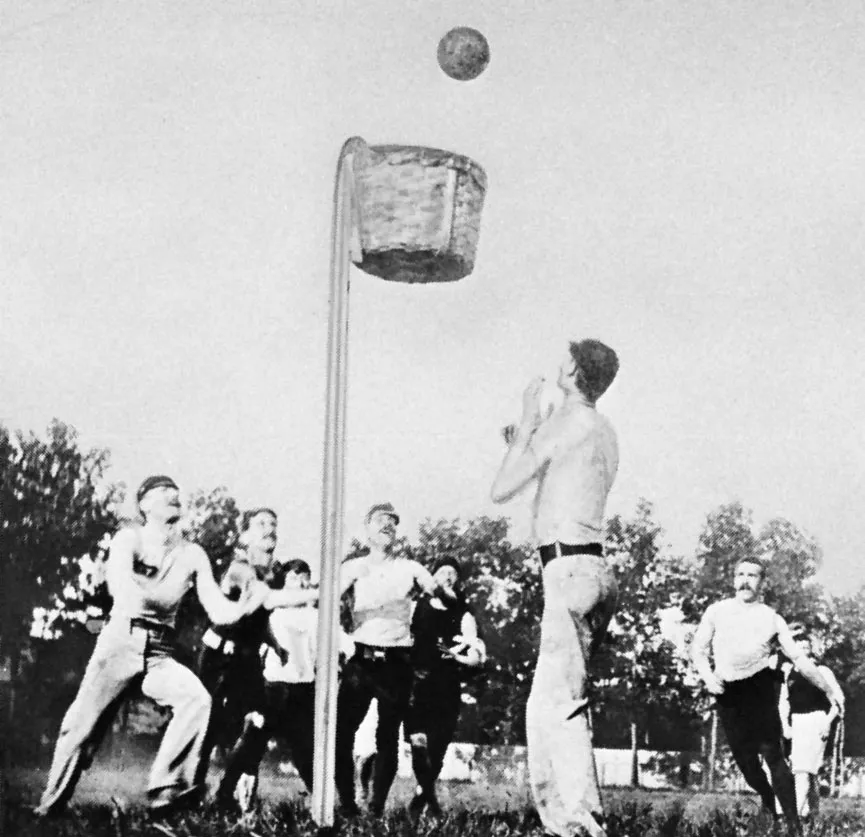
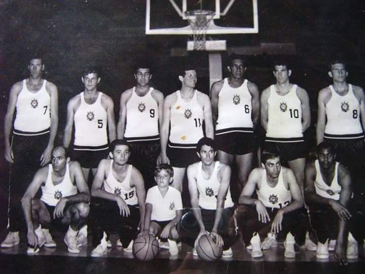
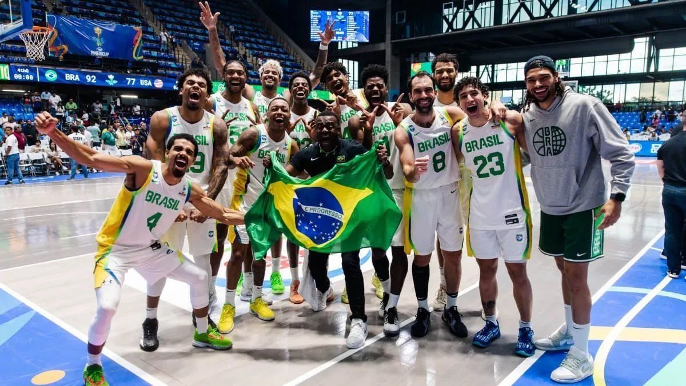
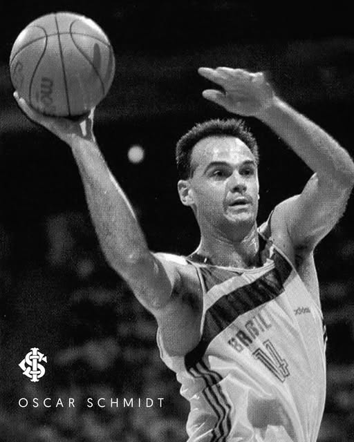
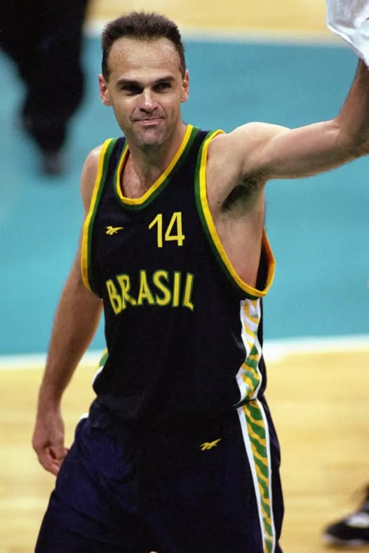

Como surgiu
O basquete foi criado nos Estados Unidos em 1891 pelo professor de Educação Física canadense James
Naismith, da escola da Associação Cristã de Moços, que buscava uma atividade em um ginásio para manter
seus alunos aquecidos no rigoroso inverno da cidade de Springfield. Ele se inspirou na mania dos alunos
e dos funcionários da escola de sempre atirar objetos à distância nos cestos de lixo.


Como era jogado
No início, a bola era arremessada em cestas de pêssego. Adaptados para o jogo, os cestos ficavam presos
com pregos a pilastras, já numa altura de 3,05m, mantida até hoje. Só depois de algum tempo, tirou-se o
fundo do cesto, evitando que a partida fosse paralisada a cada arremesso convertido. Das 13 regras
formuladas por Nashville na criação do basquete, a maioria ainda se aplica hoje.
As regras iniciais do basquete incluíam proibir agarrar a bola com as mãos, correr com a bola,
chutar a bola ou pular com a bola. Os jogadores podiam passar a bola para os colegas de equipe e marcar
pontos ao colocar a bola no cesto. Caso uma equipe cometesse três infrações consecutivas, a posse de
bola passaria para a outra equipe.
Chegada ao Brasil
O basquete chegou ao Brasil poucos anos depois através do americano Augusto Shaw, que em 1892 graduou-se
como bacharel em Artes pela Universidade de Yale e tomou contato pela primeira vez com o basquete. Dois
anos depois, recebeu desembarcou no Brasil para dar aulas no Colégio Mackenzie, em São Paulo. Além dos
livros, trouxe também uma bola de basquete na bagagem.
Logo de início, o esporte caiu no gosto das mulheres e somente depois de muita insistência de Shaw que
os homens que começaram a praticar. A primeira equipe organizada do país foi justamente do Mackenzie. Em
1912, aconteceram os primeiros torneios de basquete. Dez anos depois foi convocada a primeira Seleção
Brasileira e o país já foi campeão dos Jogos Latino-Americanos, um torneio que reuniu também a Argentina
e o Uruguai.


Crescimento
Daí em diante, o basquete não parou de crescer, tonando-se um dos mais populares do país. E os
resultados também começaram a aparecer. Em 1948, o Brasil conquistou sua primeira medalha olímpica na
modalidade, com a equipe masculina em Londres. A equipe, dirigida por Moacir Daiuto, contava com o
talento de Zenny de Azevedo, o Algodão.
Desde então, foram mais três medalhas olímpicas, sendo duas femininas e uma masculina. Em Campeonatos
Mundiais, o Brasil já chegou ao pódio em oito oportunidades. Foram dois títulos dos homens, em 1959 e
1963, e 1994 pelas mulheres.
Oscar Schmidt
Oscar Schmidt, conhecido como “Mão Santa”, é um dos maiores jogadores da história do basquete brasileiro
e mundial. Nascido em 1958, ele se destacou principalmente pela sua incrível habilidade de pontuar,
sendo
até hoje o maior cestinha da história do basquete, com mais de 49 mil pontos marcados ao longo da
carreira.
Oscar teve uma trajetória marcante tanto no Brasil quanto no exterior, atuando em clubes da Itália e da
Espanha, além de defender a seleção brasileira por muitos anos. Ele participou de cinco edições dos
Jogos
Olímpicos, um feito raro que mostra sua longevidade e importância no esporte. Mesmo tendo sido escolhido
no Draft da NBA, recusou jogar na liga para continuar defendendo a seleção brasileira, o que reforça
ainda
mais seu compromisso com o país.

